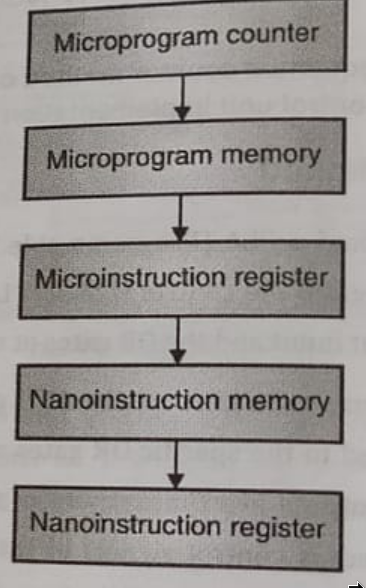

COA Module 3
Table of Contents
1. Control Units
1.1. Hardwired Control Unit Design Methods
- Combinational logic ciruits
- Generate a set of fixed sequences of control signals
- Advantages
- Higher speed of operation
- Smaller space req on silicon wafer i.e. IC
- Disadvantages
- Modification to the design are difficult
- Use in RISC Designs
- Methods to implement hardwired control unit:
1.1.1. State Table Method
- State table is combine to form a instruction
- All instruction are considered as inputs
- Each State with a set of microinstructions to be issued
1.1.2. Delay Element Method
- Implemented using delay element i.e. D-flipflops
- A flipflop give output logic '1' after specific event (t-state) and output is used to generate control signals.
1.1.3. Sequence Counter Method
- Counter keeps on incrementing and generating diff counts.
- Counts are decoded using decoder
- And the output is used as control signals
1.1.4. PLA Method
- Programmable Logic Array
- PLA is an array of AND gates as input and the OR gates as output.
1.2. Soft Wired Unit Design Methods
- Micro programmed control unit generates control signals based on microinstructions stored in control memory.
- Each instruction loads the control signals in control register.
- These control signals are given to microinstructions register, decoded and then given to the individual components.
2. Nano Programming

- Microprogram memory contains pointers to the actual microinstructions.
- Microinstructions register points to the nanoinstruction memory.
- Nanoinstruction memory contains actual mico-instruction.
3. Flynn's Classification
- Classification based on no. of Instruction Streams (IS) and Data Streams (DS) in the system.
- Parallel processing intro four categories:
3.1. Single Instruction Single Data (SISD)
- Single processor that executes one instruction at a time on single data stored in the memory.
3.2. Single Instruction Multiple Data (SIMD)
- Same instruction is given to multiple processing elements, but diff data.
3.3. Multiple Instruction Single Data (MISD)
- Multiple Instruction streams and hence multiple control units to decode these instructions.
- Each control unit takes a diff instruction from the diff memory module in the same memory.
3.4. Multiple Instruction Multiple Data (MIMD)
- Each processing element is having a diff set
- of data and diff instruction.
4. Instruction Pipeline
- Technique for overlapping the execution of several instructions to reduce the execution time of a set of instructions.
- Latency: The amount of time that a single operation takes to execute.
- Throughput: The rate at which operations get executed. In a non-pipelined processor, \[Throughout=1/latency\] In a pipelined processor, \[Throughout>1/latency\]
- Advantages
- Rate at which instruction executes is increased
4.1. Unpipelined approach
- Processor fetches an instruction from memory.
- Decodes it to determine what the instruction was.
- Read inputs from register files and perfrom operation on them given by instruction.
- Writes result back in register files.
- (Instruction fetch, instruction decode, register read, instruction execution and register write-back)
- Disadvantages
- Most of hardware is idle waiting for others to complete their task.
5. Pipeline Hazards
- Pipelining increase processor performance by incres. instruction
- Several instructions are overlapped resulting the rate at which instruction executes.
- Type of conflicts
5.0.1. Structural Hazards (Resource Conflicts)
- Caused by access to memory by two instructions at the same time.
- Can be resolved by using separate instruction and data memories.
- Occurs when processor's hardware is not capable of execu all the instruction in the pipeline simultaneously.
5.0.2. Data Hazards (Data Dependency Conflicts)
- Caused when an instruction depends on the result of a prev instruction, but this result is not yet avail.
5.0.3. Branch Difficulties (Control Hazards)
- To Be Edited.